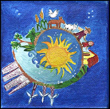
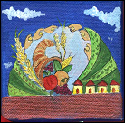
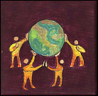
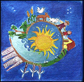
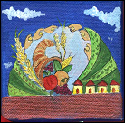
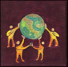

Diversity  Ecology
 Economics
Feminism
Nonviolence  Responsibility
Social Justice Sustainability
You can download a Zip file that contains all of the icons as jpeg files only (222 KB)
or jpeg and wmf files (6.82 MB).
Formats:wmf = Good for print documents. Can be scaled to size.
These images files are about 1 MB each.jpeg = Good for web pages. Cannot be scaled well.
Size is 1.44 x 1.42 inches (138 x 136 pixels).
Decentralization Democracy
Diversity  Ecology
 Economics
Nonviolence  Responsibility
Social Justice Sustainability